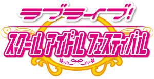

Love Live! School Idol Festival!
LLSIF!

Love Live! School Idol Festival is a game from the anime "Love Live! School Idol Project!" and "Love live! Sunshine!". The game features all 18 of the school idol girls from the µ's (Pronouced "Muse") and Aqours.
Idols from µ's:
- Honoka Kosaka
- Kotori Minami
- Umi Sonoda
- Maki Nishikino
- Hanayo Kozumi
- Rin Hoshizora
- Nico Yazawa
- Nozomi Tojo
- Eli Ayase
Idols from Aqours:
Chika Takami
Riko Sakurauchi
You Watanabe
Ruby Kurosawa
Yoshiko (or Yohane) Tsushima
Hanamaru Kunikida
Mari Ohara
Kanan Matsuura
Dia Kurosawa